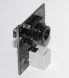
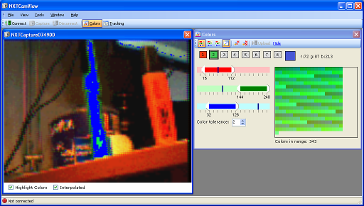

|
Community
Wiki

Donations towards Lego hardware are much appreciated - P Tingey |
|
home page
NXTCamView configures and controls the NXTCam made by mindsensors. NXTCam is a camera sensor that provides real-time vision recognition to NXT robots. NXTCam uses simple color recognition to detect objects in its view.
community wiki
Learn more about NXTCam and share your experiences at the Community Wiki
teaching NXTCam colors
The main purpose of NXTCamView is to teach the NXTCam which colors to track. Colors are setup in ranges that are uploaded and stored in the NXTCam.
To teach the NXTCam colors -
- Download, install and start NXTCamView on your PC.
- Ensure the two NXTCam drivers (USB-to-Serial and NXTCam) have been installed on your PC.
- Ensure the NXTCam is plugged into one of your PCs USB ports.
- In NXTCamView, setup communications to the NXTCam via Tools\Options. Often only the COMPort needs to be set.
- Connect to your NXTCam.
- Capture an image (or two) to check the focus and lighting conditions.
- Select some colors to track by clicking on the image you captured. Colors are shown as ranges of red, green and blue (min/max values of each). You can add or remove colors from a range by holding down the "CTRL" key or "SHIFT-CTRL" keys while clicking.
- Upload the color ranges into the NXTCam.
- Test your colors in the Tracking window to see what object blobs are returned.
- Disconnect NXTCamView from your NXTCam.
Now you're ready to start coding!
demo screencams
We have some Demo Screencams which can help you get started
screenshots (more)
